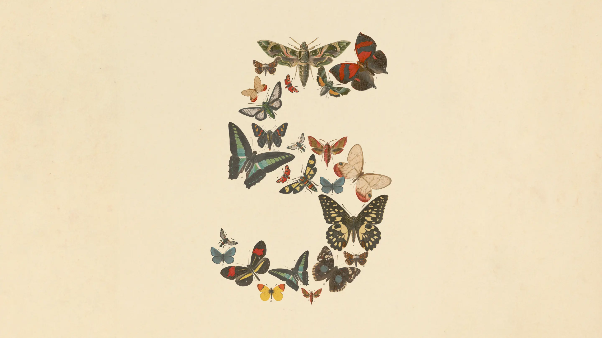
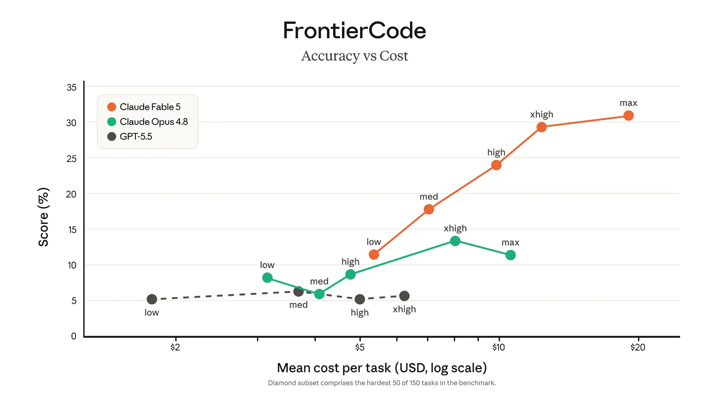
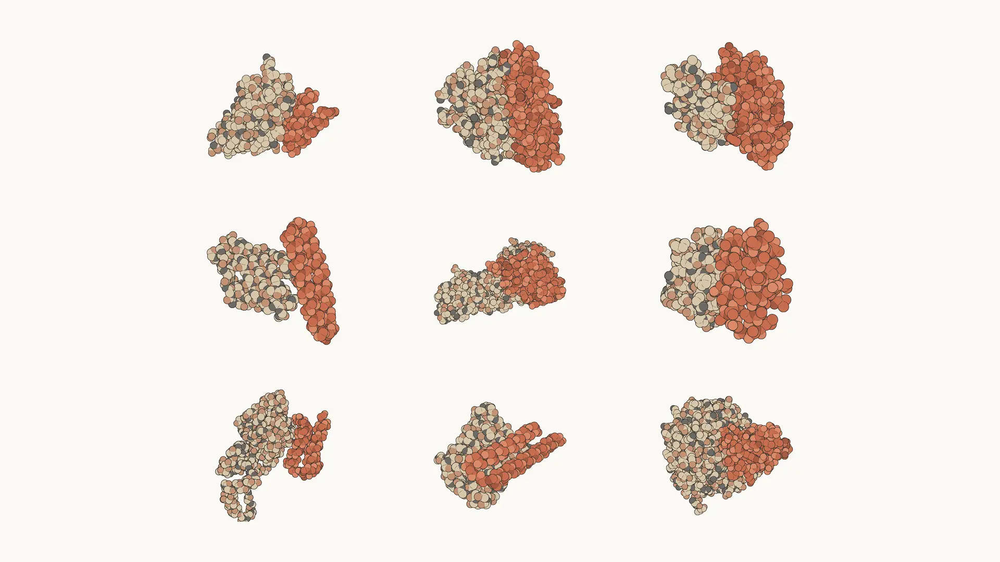
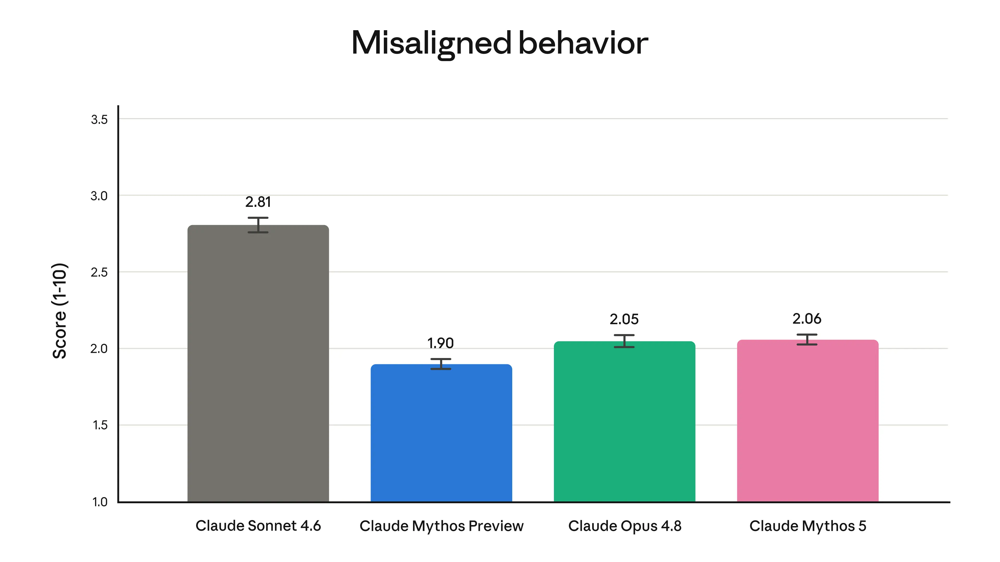
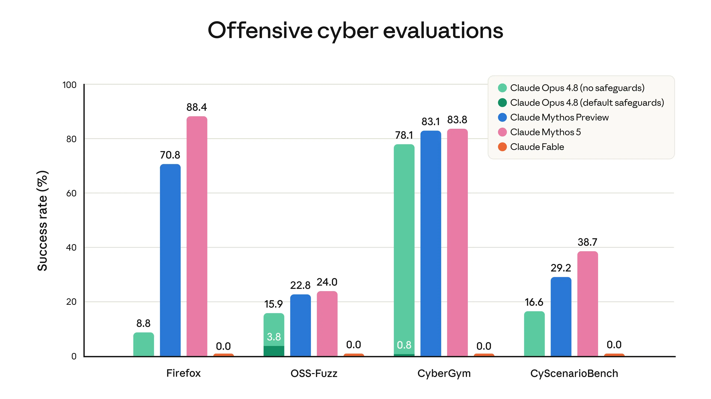
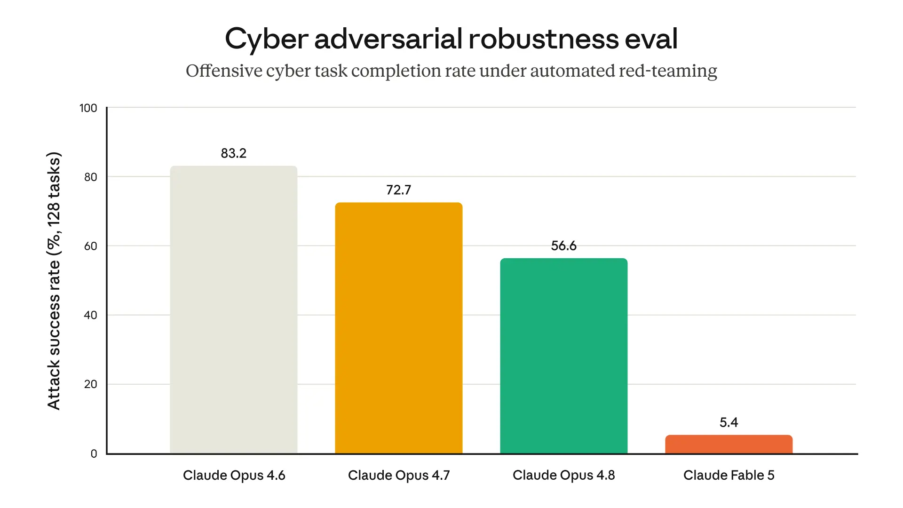
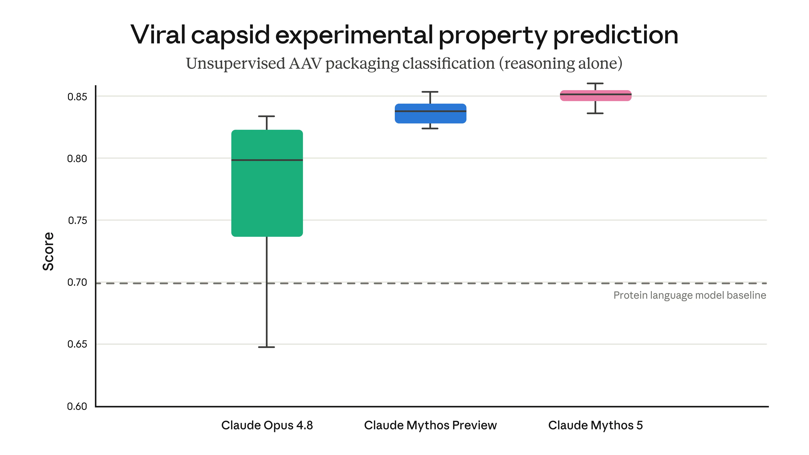

Claude Fable 5 and Claude Mythos 5

Today we’re launching Claude Fable 5: a Mythos-class1 model that we’ve made safe for general use.
Fable 5’s capabilities exceed those of any model we’ve ever made generally available. It is state-of-the-art on nearly all tested benchmarks of AI capability, showing exceptional performance in software engineering, knowledge work, vision, scientific research, and many other areas. The longer and more complex the task, the larger Fable 5’s lead over our other models.
Releasing a model this capable comes with risks. Without safeguards, Fable 5’s capabilities in areas like cybersecurity could be misused to cause serious damage. We’ve therefore launched the model with safeguards that mean queries on some topics will instead receive a response from our next-most-capable model, Claude Opus 4.8. To release the model both safely and quickly, we’ve tuned these safeguards conservatively—they’ll sometimes catch harmless requests, though they trigger, on average, in less than 5% of sessions. With more capable models arriving in the coming months, we’re working to improve our safeguards and reduce false positives as quickly as we can.
For a small group of cyberdefenders and infrastructure providers, we’re also launching Claude Mythos 5. It’s the same underlying model as Fable 5, but with the safeguards lifted in some areas.2 Mythos 5 will initially be deployed through Project Glasswing, in collaboration with the US government, as an upgrade to Claude Mythos Preview. It has the strongest cybersecurity capabilities of any model in the world. Soon, we intend to expand access to Mythos 5 through a broader trusted access program.
The capabilities of models like Fable 5 and Mythos 5 have the potential to do profound good for the world. We’ve seen the beginnings of this in Project Glasswing, where the models have helped cyber defenders secure critically important software. We’ve also seen it in life sciences research, where the models are positing novel hypotheses and speeding up the development of new therapeutics.
Fable 5 and Mythos 5 are being offered at $10 per million input tokens and $50 per million output tokens—less than half the price of Claude Mythos Preview. Today’s joint launch is another step towards our goal of bringing advanced AI capabilities to as many users as possible, as quickly and as safely as we can.
Evaluating Claude Fable 5 and Claude Mythos 5
The table below compares the capabilities of Fable 5 and Mythos 5 to other leading models.

Fable 5 and Mythos 5 can work autonomously for longer than any previous Claude models. Below we discuss how these skills apply to software engineering, and cover the model’s improved capabilities in knowledge work, vision, memory, and life sciences research.
Software engineering. During early testing, Stripe reported that Fable 5 compressed months of engineering into days. In a 50-million-line Ruby codebase, the model performed a codebase-wide migration in a day that would otherwise have taken a whole team over two months by hand. Fable 5 is also more token-efficient than past Claude models: on Cognition’s FrontierCode evaluation, which tests whether models can pass difficult coding tasks while meeting the standards of high-quality production codebases, Fable 5 scores highest among frontier models, even at medium effort.


Knowledge work. Fable 5 shows strong performance on complex analytical tasks. On Hebbia’s Finance Benchmark for senior-level reasoning, Fable 5 has the highest score of any model, with substantial gains in document-based reasoning, chart and table interpretation, and problem solving. IMC noted that Fable 5 aced their trading-analysis evaluations nearly across the board, including factual lookup, conceptual reasoning, root-cause analysis, and expected-value analysis.
Vision. Fable 5 is the new state-of-the-art model for tasks involving vision. It can extract precise numbers from detailed scientific figures and can perform complex vision-based tasks like rebuilding a web app’s source code from screenshots alone. It also needs less scaffolding: for example, previous Claude models struggled to play Pokémon FireRed even with harnesses that gave them additional helpful tools, but Fable 5 beat FireRed with a minimal, vision-only harness.
Memory and long-context. Fable 5 stays focused across millions of tokens in long-running tasks and improves its outputs using its own notes. When we had the model play the deck-building game Slay the Spire, giving it access to persistent file-based memory improved its performance three times more than for Opus 4.8; Fable also reached the game’s final act three times more often.
Drug design: Using Mythos 5, our internal protein design experts accelerated aspects of the drug design process by around ten times. In one example, they found that Mythos 5, with protein design and bioinformatics tools but no human assistance, matches or beats skilled human operators. In doing so, the model executes all of the tasks that are normally completed by a scientist: choosing binding sites, selecting and running protein design tools, and recovering from failures along the way. Nine of the 14 protein targets from this study (shown below) yielded strong candidates for drug design that we’re currently investigating.

Novel hypotheses in molecular biology. Mythos 5 is our first model to consistently produce novel, compelling scientific hypotheses. In blinded head-to-head comparisons against Opus-class models, our scientists preferred Mythos’s molecular biology hypotheses ~80% of the time, and have advanced several to experimental evaluation. In the meantime, one Mythos hypothesis—a novel mechanism for an E. coli protein—was corroborated in a study from a lab independently working on the same problem.
Novel research in genomics. Mythos 5 conducted novel genomics research in over a week of largely autonomous work. It assembled single-cell data for millions of cells spanning 138 animal species and designed and trained a custom machine learning model to identify cells performing the same role in even distantly related organisms. With only high-level human input, Mythos 5’s trained model outperformed a recent model published in the journal Science—despite being 100 times smaller. We intend to publish these results in the coming months.
Alignment. In our automated alignment assessment we found that Mythos 5’s level of misaligned behavior (including misaligned actions taken by the model such as deception, and cooperation with misuse of the model by a user) was low, and similar to that of Opus 4.8. Given they are the same underlying model, Fable 5’s level of alignment will be similar. The assessment is described in full, along with a detailed suite of other safety and capabilities tests, in the model’s system card.

Early feedback for Claude Fable 5
Customers with early access ran their own tests on Fable 5. Below, in their words, is a selection of what they’re seeing:
Claude Fable 5 is the state of the art model on CursorBench. It's opened up a class of long-horizon problems that were out of reach for earlier models.
Claude Fable 5 is a real step forward for the developers GitHub serves. In our early testing, it took on complex, long-horizon coding tasks with a level of autonomy and reliability that exceeded previous benchmarks. But what excites us most is the direction it points: a future where developers can hand increasingly ambitious work to agents and trust the results across the software lifecycle.
These are the strongest results of any Claude model we've had the opportunity to test. Claude Fable 5 is a clear step forward on agentic coding and prototyping.
Claude Fable 5's reasoning is a clear step beyond Opus 4.8. It works at senior research scientist grade — picking directions, allocating resources, killing its incorrect beliefs, and producing novel first-principles outputs.
Claude Fable 5 understands what builders mean, not just what they type. Apps that took a hundred prompts a year ago, it now one-shots. When a customer really hits a wall, it's the model we reach for to get them past it quickly, so they can finish what they set out to build.
Claude Fable 5 feels materially different. In blind review, our lawyers found its redlines matched or beat our current model every time.
At the highest effort, Claude Fable 5 reflects on and validates its own work. For us, that's what makes highly autonomous operations possible — the extra thinking pays for itself.
Claude Fable 5 delivers more capable engineering in fewer turns than prior models — handling the complex multi-agent workflows our employees run daily in Claude Code.
Claude Fable 5 is the highest-scoring model on FrontierBench, Cognition's frontier coding eval. It excels at long-horizon reasoning and generalizes to unfamiliar tools out of the box.
Claude Fable 5 is the strongest finance-first model we've tested, both on general finance and reasoning. It's a notable step up.
Claude Fable 5 is the first to break 90% on our core analytics benchmark of complex, long-running analytical tasks — a 10-point jump over Opus. On the hardest questions, it shows strong judgment and attention to nuance.
Claude Fable 5 is the strongest model we've tested on frontier physics research while using a third of the reasoning tokens. In 36 hours it got nearly to where GPT-5.5 landed after four days.
On ViBench, our end-to-end vibe-coding benchmark, Claude Fable 5 is the highest-performing model we've tested — nearly saturating our base use cases and building apps in less time with fewer tokens.
Claude Fable 5 beats Opus 4.8 on our everyday spreadsheet suite at every effort level — and it does it with fewer turns, finishing runs 25–30% faster.
Claude Fable 5’s new safeguards
Mythos-class models have reached a threshold where they present significant risks. In April we began Project Glasswing, releasing the first Mythos-class model (Claude Mythos Preview) to only a limited group of cyber defenders and critical software infrastructure providers. When we did so, we stated that we hoped to eventually release Mythos-level capabilities to all our users, so long as we had developed new safeguards that were strong enough to reliably prevent misuse.
Over the past few months we have been improving these safeguards, and they are now robust enough for a general release. Because we have prioritized safety, we’ve deliberately tuned the safeguards to be cautious, and they are still stricter than would be ideal—for example, sometimes benign requests will trigger our classifiers. We recognize that this will be frustrating to some users, and our aim is to reduce false positives as we update and refine the safeguards after launch.
Below we discuss each of Fable 5’s new safeguards in turn. Our wider suite of safeguards is discussed and evaluated in the model’s system card and our most recent risk report.
Safety classifiers
The frontier cybersecurity and research biology capabilities of Mythos-class models mean that they pose a substantial risk of uplift to malicious actors. That is, these models could provide information or advice that assists those actors in causing serious harm that they couldn’t have received from other sources (for example, from internet search engines). Furthermore, a great deal of advanced usage of AI models is dual use: the same queries that are beneficial in the hands of cybersecurity professionals and biology researchers could be dangerous if available to malicious actors.
We therefore need strong safeguards to prevent misuse, and their coverage needs to be broad. The safeguards themselves have to stand up to sustained and sophisticated attempts to bypass them (also known as “jailbreaking” the system). The uplift from Mythos-level capabilities is valuable to many adversaries—for instance, those who could financially gain from cyberattacks—and we therefore expect them to be motivated to try to circumvent our safety measures.
Fable 5 comes with a new set of classifiers: separate AI systems that detect potential misuse, including jailbreak attempts, and prevent the main model (in this case Fable 5) from responding. We’ve been running classifiers on our models for some time, and Fable 5’s classifiers are an extension of this previous work with extra coverage.
When Fable’s classifiers detect a request related to cybersecurity, biology and chemistry, or distillation, the response is automatically handled by Claude Opus 4.8 instead. Users will be informed whenever this occurs. Opus 4.8 is a highly capable model in its own right: a response that falls back to Opus is a far better experience than an outright refusal from Fable. Our early data shows that more than 95% of Fable sessions involve no fallback at all—for those sessions, Fable 5’s performance is effectively the same as that of Mythos 5.
The following are the areas covered by the classifiers:
1. Cybersecurity. Mythos-class models excel at discovering and exploiting software vulnerabilities. They can thus make cyberattacks substantially easier and cheaper to commit. Mythos-class models also show strong skills in agentic hacking. This involves performing multiple different parts of a cyberattack in addition to finding exploits—reconnaissance, discovery, lateral movement, and more. To prevent these agentic hacking skills providing uplift in cyberattacks, we designed our cybersecurity classifiers to cover both exploitation and offensive cyber tasks in a broader sense. As shown in the graph below, our classifiers prevent Fable from making any progress on these tasks.

We extensively red-teamed our classifiers to test their robustness against jailbreaks. As well as internal testing, we ran an external bug bounty that produced no universal jailbreaks in over 1,000 hours of testing. External red-teaming organizations we engaged also failed to find any universal jailbreaks on long-form agentic tasks so far—although the UK AISI has made progress towards one within a brief initial testing window.4 It is likely impossible to completely prevent universal jailbreaks, but our goal is to make any remaining jailbreaks sufficiently slow and costly that we can detect and prevent them before they are used at scale.
The graph below, from one of our internal evaluations, illustrates how Fable 5’s safeguards give it greater resistance to jailbreaks than our previous generally accessible models:

One of our external partners found that Fable 5’s safeguards against harmful cyber queries were the most robust of any model tested (including Opus 4.8 and Opus 4.7). Fable 5 complied with zero harmful single-turn requests relating to planning a cyberattack, exploit development, or defense evasion. This held whether or not one of the requests used any of 30 different public jailbreak techniques.
2. Biology and chemistry. We have long used our classifiers to block our models from responding on a narrow selection of bioweapons-related queries. But we are no longer certain that blocking this narrow selection is enough. This is for two reasons: first, we have reason for concern about well-resourced malicious actors attempting to gain uplift from our models for highly risky biological research. Second, models now have a greater ability to accomplish real-world scientific tasks.
For example, we tested Mythos 5’s ability to complete a challenging step in designing adeno-associated viruses (AAVs). AAVs are a component for delivering gene therapies, but the same capability, in the wrong hands, could enable the design of dangerous viruses. In this task, various AI models were evaluated on their ability to predict how a genetic modification would impact the assembly of the virus’s outer shell (among a set of therapeutically-relevant unpublished candidates developed by Dyno Therapeutics). We did not explicitly train our models to perform this task—and yet Mythos-class models outperformed sophisticated models dedicated to protein tasks (known as “protein language models”) using their biological reasoning alone. This demonstrates a promising ability to complete simple but important tasks in gene therapy research and development—but also highlights the risk posed by such dual-use capabilities.

Our priority was to safely release Fable as soon as we could, even at the cost of overly broad safeguards. Therefore, for the time being we have arranged for Fable to fall back to Opus 4.8 on most requests related to biology and chemistry. As with all of our classifiers, we hope to narrow these safeguards as soon as possible: as can be seen from the evidence above, there is great potential for positive applications of Fable for science, and we do not want false positives from our classifiers to get in the way. In the coming weeks, some biomedical researchers and companies will be able to join our trusted access program for biology capabilities in Mythos 5 (discussed below).
3. Distillation. We’ve previously identified large-scale attempts to extract (“distill”) Claude’s capabilities to train competing models in authoritarian countries. Distillation of Fable 5’s abilities could indirectly lead to the proliferation of near-frontier AI capabilities—and these could be released without the appropriate safeguards. Requests that are flagged by our classifiers as being part of such distillation attempts will fall back to Opus 4.8.
A new data retention policy
Finally, we’re making a change to the way we handle business customer data for Fable 5, Mythos 5, and future models with similar or higher capability levels. We will require 30-day retention for all traffic on Mythos-class models, on both first- and third-party surfaces. We won’t use this data to train new Claude models, or for any non-safety-related purpose, and we’ve instituted new privacy protections including logging all human access to the data and ensuring its deletion after 30 days in almost all cases (see this post for further details). The data will help us defend against complex and novel attacks (including new jailbreaks and attacks that operate across many requests) as well as help us identify and reduce false positives.
Claude Mythos 5 and the trusted access program
Beginning today, all users who currently have access to Claude Mythos Preview (for example, our cybersecurity partners in Project Glasswing) will be able to upgrade to Claude Mythos 5—the same model as Claude Fable 5 but with cyber safeguards lifted. Users will find Mythos 5 comparable to, or somewhat stronger than, Mythos Preview in most cases, while costing substantially less.
In consultation with the US government, we plan to steadily expand access to Claude Mythos 5, continuing our periodic addition of new partners, as well as pursuing a trusted access program that allows cybersecurity organizations to apply in a more systematic manner.
Our plans also include opening a trusted access program for biology, to help accelerate biomedical research and discover new therapies with Mythos-class capabilities. This program will provide access to Fable 5 with the biology and chemistry safeguards removed (but the cyber safeguards still in place). It will enroll a small number of researchers from a variety of life science organizations spanning fundamental and translational research; we’re planning to expand access to this program while simultaneously making our safeguards better.
Availability
Claude Fable 5 is available everywhere today. Claude Mythos 5 is restricted to Glasswing partners (with cyber safeguards lifted) and soon to select biology researchers (with biology and chemistry safeguards lifted) only, until our broader trusted access program is available.
Pricing for both models is $10 per million input tokens and $50 per million output tokens. Developers can use claude-fable-5 via the Claude API.
We expect demand for Fable 5 to be very high, and difficult to predict. On the Claude API and consumption-based Enterprise plans, Fable 5 is fully available from today. For subscription plans, we’d rather give access sooner than later, so we’re rolling out more conservatively, in stages:
- From today through June 22, Fable 5 is included on Pro, Max, Team, and seat-based Enterprise plans at no extra cost.
- On June 23, we’ll remove Fable 5 from those plans. Using it after that will require usage credits. If capacity allows, we’ll extend the included window.
- After this point—when sufficient capacity allows us to do so—we aim to restore Fable 5 as a standard part of subscription plans. We intend to do this as quickly as we can.
Throughout this period, we’ll communicate any changes ahead of time so users know where things stand.
Edit June 9, 2026: Updated the discussion of AAVs to note that the candidates were developed by Dyno Therapeutics.
Footnotes
- Mythos-class models are a tier of Claude models that sit above our Opus class in capability. The first, Claude Mythos Preview, was released in April through Project Glasswing. That is followed today by Claude Fable 5 and Claude Mythos 5.
- Fable is from the Latin fabula, “that which is told,” akin to the Greek mythos. The safeguards are what distinguish the two models (Fable and Mythos) and are why we’ve given them different names.
- Metrics: Firefox = fraction of trials achieving arbitrary code execution (the exploit's full-success tier). OSS-Fuzz = severity-weighted mean of the five-tier score (0.2 crash → 1.0 control-flow hijack), so values are a weighted average rather than a success rate. CyberGym = fraction reproducing the target vulnerability (the public leaderboard metric). CyScenarioBench = success rate averaged equally across its challenges.
- A universal jailbreak can be defined as any prompt, script, or harness that allows a user to interact with a model as if its safeguards were not present. This is opposed to more minor jailbreaks that are only effective in very limited contexts or require additional effort to be adapted to each new situation.
Related content
Introducing Claude Corps
We’re launching Claude Corps, a national fellowship program for people early in their careers who are passionate about extending the benefits of AI to communities across America.
Read moreIntroducing the Services Track and Partner Hub of the Claude Partner Network
Read moreWhat we learned mapping a year’s worth of AI-enabled cyber threats
As AI transforms the nature of and methods behind cyberattacks, how well do the techniques and frameworks used by the security community hold up? In a new report, we seek to answer that question.
Read more